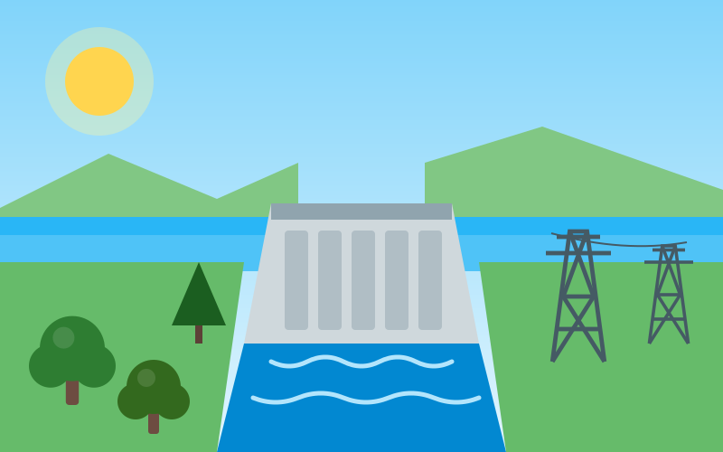
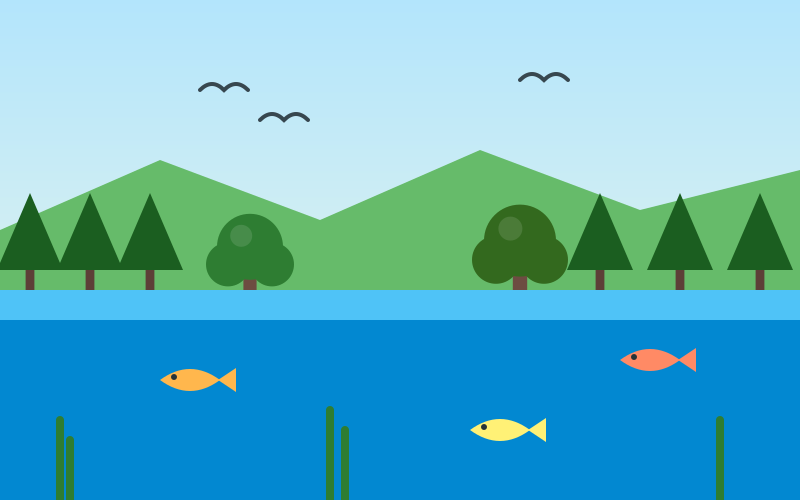

Por que estudar Itaipu?
A Usina Binacional de Itaipu é um exemplo de geração de energia a partir de uma fonte renovável: a água. Estudar o seu funcionamento ajuda a compreender a importância da transição para fontes limpas e, ao mesmo tempo, os cuidados socioambientais que grandes empreendimentos de energia exigem.
A Itaipu Binacional pertence em partes iguais ao Brasil e ao Paraguai e aproveita o Rio Paraná, na fronteira entre os dois países, na região de Foz do Iguaçu (PR). O Tratado de Itaipu foi assinado em 26 de abril de 1973, e a empresa binacional foi criada em maio de 1974 para construir e operar a usina.
O reservatório começou a ser formado em outubro de 1982 e, em 5 de maio de 1984, entrou em operação a primeira das 20 unidades geradoras do projeto. Antes do enchimento do lago, a Operação Mymba Kuera (“pega-bicho”, em tupi-guarani) resgatou 36.450 animais da área que seria inundada.
Fonte: Itaipu Binacional – Nossa história e Perguntas frequentes (consulta em 26/10/2026).
Geração de energia renovável
Uma usina hidrelétrica aproveita a energia do movimento da água. De forma simplificada, o processo acontece em etapas:
- Represamento: uma barragem forma um reservatório que acumula água em um nível mais alto.
- Condução: a água é conduzida por tubulações até as turbinas, ganhando velocidade.
- Movimento: a força da água faz as turbinas girarem.
- Conversão: as turbinas acionam geradores, que transformam a energia mecânica em energia elétrica.
- Transmissão: a eletricidade segue por linhas de transmissão até cidades, indústrias e residências.

Por que é renovável? A água utilizada para gerar energia faz parte do ciclo natural da chuva, dos rios e da evaporação. Ela passa pelas turbinas e volta ao rio, sem ser consumida no processo.
A importância da energia limpa
Fontes de energia limpa e renovável – como a hidráulica, a solar e a eólica – são essenciais para enfrentar a crise climática, pois, durante a operação, não dependem da queima de combustíveis fósseis.
Clima
Menor dependência de combustíveis fósseis na geração de eletricidade.
Recursos
Uso de fontes que se renovam na natureza, como a água, o sol e o vento.
Responsabilidade
Mesmo fontes renováveis exigem uso racional da energia por parte de todos nós.
Impacto energético
Os indicadores abaixo ajudam a dimensionar a importância de Itaipu para o abastecimento de energia. Os valores de produção e de participação são de 2025.
- Capacidade instalada
- 14.000 MW (14 GW)
- Unidades geradoras
- 20 unidades, de 700 MW cada
- Produção anual de energia
- 72.879.287 MWh em 2025, 8,63% acima de 2024. Recorde histórico: 103.098.366 MWh, em 2016.
- Participação no abastecimento
- Em 2025, cerca de 7% da energia consumida no Brasil e cerca de 87% da consumida no Paraguai.
Fontes: Itaipu Binacional, “Usina de Itaipu fecha 2025 com produção de 72,879 milhões de MWh”; participação Brasil/Paraguai segundo a imprensa regional (Diário do Sudoeste) com base nos dados da Itaipu; capacidade e unidades conforme a Itaipu, citadas pela CNBC (2017). Consulta em 26/10/2026. Números antigos, como “17% do Brasil e 76% do Paraguai”, ainda circulam na internet, mas não refletem 2025.
Preservação dos ecossistemas locais
A formação de um reservatório transforma a paisagem e os ambientes naturais da região. Por isso, a preservação de matas ciliares, da fauna, da flora e da qualidade da água é parte fundamental da responsabilidade de uma usina hidrelétrica.

Programas de preservação de Itaipu: desde o início das ações de restauração da faixa de proteção do reservatório e dos refúgios biológicos, a Itaipu informa o plantio de mais de 24 milhões de árvores nativas, considerando apenas a margem brasileira. O Viveiro Florestal produziu cerca de 350 mil mudas de 89 espécies da Mata Atlântica no último ano.
No Refúgio Biológico Bela Vista, em Foz do Iguaçu, nasceram 64 animais no último ano, entre eles duas harpias, cinco antas e seis jacutingas, espécies ameaçadas de extinção. O refúgio integra o Corredor de Biodiversidade do Rio Paraná, que conecta o Parque Nacional do Iguaçu às áreas protegidas da Itaipu e ao Parque Nacional de Ilha Grande.
Fonte: Itaipu Binacional, “Itaipu celebra 42 anos de áreas protegidas e reforça seu compromisso com a biodiversidade” (consulta em 26/10/2026); sobre o corredor, Notícia Sustentável.
Ações socioambientais
A maior parte das ações sociais e ambientais fora da usina reúne-se no programa Cultivando Água Boa, criado em 2003. Ele atua nos 29 municípios da Bacia Hidrográfica do Paraná 3, no Oeste do Paraná, com cerca de 20 programas e mais de 60 projetos. Veja os eixos de estudo abaixo.
Educação ambiental
A educação ambiental atravessa todas as ações do Cultivando Água Boa e, segundo a plataforma Boas Práticas, conta com mais de 14 mil protagonistas, 95% deles voluntários.
Biodiversidade
Reflorestamento com espécies nativas, viveiro de mudas e reprodução de espécies ameaçadas, como a harpia, no Refúgio Biológico Bela Vista.
Comunidades do entorno
Apoio a comunidades indígenas, pescadores, catadores de recicláveis e à agricultura familiar. Em 2025, a Itaipu pagou US$ 246,5 milhões em royalties a cada um dos dois países, segundo o Relatório Anual.
Gestão da água
A qualidade da água é monitorada a cada três meses em 13 pontos entre Foz do Iguaçu e Guaíra, e sete estações automáticas medem turbidez, pH, temperatura e oxigênio a cada hora (dados de 2024).
Fontes: Itaipu Binacional (Programa Cultivando Água Boa); Boas Práticas (boaspraticas.org.br); 100fronteiras, sobre o Relatório Anual 2025; Cenário Energia, sobre o monitoramento da água. Consulta em 26/10/2026.
Impacto socioambiental
Toda grande obra de infraestrutura produz efeitos positivos e desafios. Uma análise educativa e equilibrada deve considerar os dois lados:
Benefícios a analisar
- Geração de eletricidade a partir de fonte renovável.
- Menor dependência de combustíveis fósseis.
- Oportunidades de desenvolvimento para a região.
Desafios a analisar
- Transformação da paisagem pela formação do reservatório.
- Efeitos sobre a fauna, a flora e os rios.
- Efeitos sobre as comunidades que viviam na região.
Lição para o dia a dia: mesmo quando a energia vem de uma fonte renovável, cada quilowatt-hora tem um custo ambiental e social. Usar a energia com consciência em casa, na escola e no trabalho é uma forma de valorizar esse recurso.
Fontes e referências
As informações conceituais deste artigo têm caráter didático. Os dados específicos sobre Itaipu seguem a lista abaixo. Todas as páginas foram consultadas em 26/10/2026.
- Itaipu Binacional – Nossa história: itaipu.gov.br/institucional/sobre-itaipu/nossa-historia
- Itaipu Binacional – Perguntas frequentes: itaipu.gov.br/contatos/perguntas-frequentes
- Itaipu Binacional – Produção de 2025: Usina de Itaipu fecha 2025 com produção de 72,879 milhões de MWh
- Itaipu Binacional – Áreas protegidas: Itaipu celebra 42 anos de áreas protegidas
- Itaipu Binacional – Cultivando Água Boa: Programa Cultivando Água Boa ganha o mundo
- Diário do Sudoeste – participação de Brasil e Paraguai em 2025: diariodosudoeste.com.br
- 100fronteiras – Relatório Anual 2025 e royalties: 100fronteiras.com
- Cenário Energia – monitoramento da água: cenarioenergia.com.br
- CNBC – capacidade e unidades geradoras (2017): cnbc.com
- Ilustrações: originais do projeto EcoVerde (equipe Promptdão).